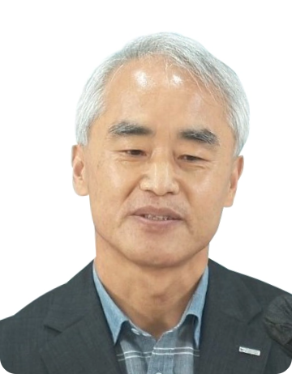
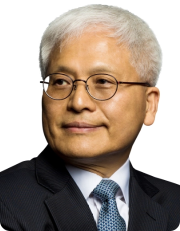
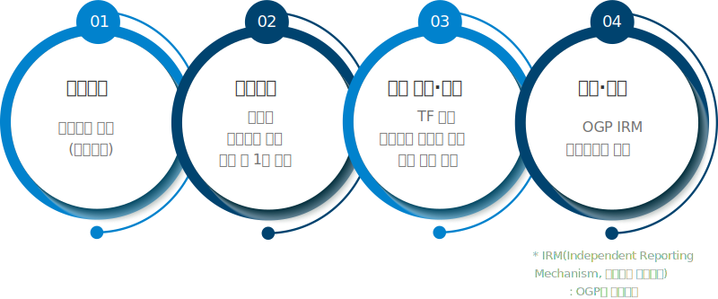
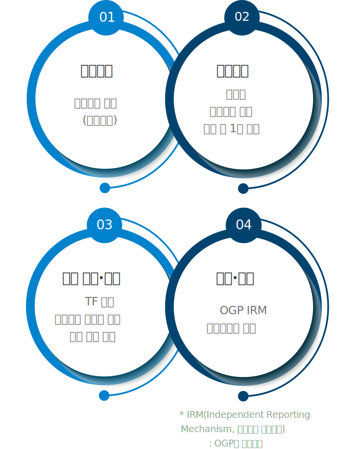

대한민국 열린정부위원회는
대한민국 열린정부 실현을 위해
정부와 시민사회가 협력하여
정책과제를 발굴하고 이행하는
국내 민·관 협의체입니다.
대한민국
열린정부위원회
개요
- 근거
- 「대한민국 열린정부위원회의 설치 및 운영에 관한 규정」(국무총리훈령 제790호, '21. 8. 2.) 다운로드
- 성격
- OGP의 국내 민관협의체
- 구성
- 위원장 2명을 포함한 30명의 위원
당연직(2명) 정부위원(6명) 민간위원(22명)
※ 공동위원장 : 행정안전부 차관 + 민간 위촉위원 중 호선
- 기능
- 열린정부 국가실행계획의 수립, 열린정부의 가치 확산과 인식 제고, 열린정부를 위한 정책에 대한 시민의견 수렴 및 참여 방안 등 자문
대한민국 열린정부위원회 민간위원
제3기 민간위원
 권오현
권오현
활동가 / 이사장코드포코리아,
사회적협동조합 빠띠
김래영
교수단국대학교 법과대학
김정환
교수연세대학교
법학전문대학원
박경신
이사 / 교수사단법인 오픈넷,
고려대학교
법학전문대학원
박수정
사무총장행정개혁시민연합1, 2기 민간위원
박지환
이사(변호사)사단법인 오픈넷1, 2기 민간위원
신민수
공동대표
디지털혁신정책포럼
안기순
이사(변호사) / 소장로앤컴퍼니,
법률 AI 연구소
안평환
자문위원국가균형발전위원회
양건모
상임이사정의연대1, 2기 민간위원
오연주
정책본부 책임연구원한국지능정보사회진흥원
이복실
한국지부 회장세계여성이사협회(WCD)

이상학
공동대표한국투명성기구1, 2기 민간위원
이선중
수석연구원서울시립대학교
반부패시스템연구소
이준수
대표 / 활동가레티스랩,
코드포코리아
이혜정
사무총장청주YWCA
임재홍
교수한국방송통신대학교
법학과
장명숙
인권위원장한국여성사회복지사회

조대식
사무총장KCOC
(국제개발협력민간협의회)1, 2기 민간위원
최경진
교수가천대학교 법학과
최진욱
교수고려대학교 행정학과
하지원
대표(사)에코맘코리아
열린정부
국가실행계획
열린정부 국가실행계획 수립 배경
OGP 회원국은 열린 정부 과제(15개 내외)를 담은 2개년 국가실행계획을 시민사회와 공동 수립·이행 의무(OGP 운영규정) ※ 우리나라는 OGP 가입(‘11년) 후 현재까지 제5차 국가실행계획 수립
열린정부 국가실행계획 수립 절차
국내 민·관 협의체인 ｢대한민국 열린정부위원회｣를 중심으로 열린정부 정책과제를 발굴하고 부처 협의 등을 거쳐 최종 과제 선정


제5차 국가실행계획
수립 경과
- 계획수립 : ①디지털 개방, ②반부패, ③재정 투명성, ④참여·사회적 가치 등 4개 분야로 기본방향 설정(‘20.3.)
- 과제발굴 : 대국민 과제 공모 실시(’20.4.)
- 과제숙성 : 4개 분야별로 분과를 구성, 과제 숙성 및 논의(‘20.4.~)
- 심의·의결 : 제7차 회의(서면)시 승인(‘21.7.6.~7.12.)
과제 목록
OGP의장단의 공동비전에 따라 목록 구성,
6개 부처 참여, 14개 과제 선정
| 공동비전 | 실행과제 | 주관부처 |
|---|---|---|
|
시민영역 |
1. 청년의 정책참여와 해외 네트워크 강화
|
행정안전부 |
|
2. 사회취약계층의 참여 확대와 대표성 제고
|
여성가족부 인사혁신처 |
|
|
3. 국민의 정책결정과정 참여
|
행정안전부 | |
|
4. 국민의 예산정책과정 참여를 통한 재정 투명성 강화
|
기획재정부 행정안전부 |
|
|
반부패 |
5. 공공기관 네트워크장비 발주 및 적정성 온라인 제공
|
과학기술정보통신부 |
|
6. 내부고발자 보호
|
국민권익위원회 | |
|
7. 빅데이터 기반의 국민생활 속 불공정 개선
|
국민권익위원회 | |
|
8. 시민과 정부가 함께하는 청렴한 사회 만들기
|
국민권익위원회 | |
|
9. 시민사회의 성장기반 마련
|
행정안전부 | |
|
포용적 |
10. 디지털 포용 확대
|
과학기술정보통신부 |
|
11. 디지털·과학기술 활용 주민 공감 지역 문제 해결
|
과학기술정보통신부 행정안전부 |
|
|
12. 국민의 안전을 위한 데이터 개방
|
행정안전부 | |
|
13. 국민과 함께하는 공공데이터 개방·활용
|
행정안전부 | |
|
14. 회의 정보공개 확대
|
행정안전부 |
| 시민영역 국민참여 강화 | |
|---|---|
|
1. 청년의 정책참여와 해외 네트워크 강화
|
행정안전부 |
|
2. 사회취약계층의 참여 확대와 대표성 제고
|
여성가족부 인사혁신처 |
|
3. 국민의 정책결정과정 참여
|
행정안전부 |
|
4. 국민의 예산정책과정 참여를 통한 재정 투명성 강화
|
기획재정부 행정안전부 |
| 반부패 | |
|
5. 공공기관 네트워크장비 발주 및 적정성 온라인 제공
|
과학기술정보통신부 |
|
6. 내부고발자 보호
|
국민권익위원회 |
|
7. 빅데이터 기반의 국민생활 속 불공정 개선
|
국민권익위원회 |
|
8. 시민과 정부가 함께하는 청렴한 사회 만들기
|
국민권익위원회 |
|
9. 시민사회의 성장기반 마련
|
행정안전부 |
| 포용적 디지털 혁신 | |
|
10. 디지털 포용 확대
|
과학기술정보통신부 |
|
11. 디지털·과학기술 활용 주민 공감 지역 문제 해결
|
과학기술정보통신부 행정안전부 |
|
12. 국민의 안전을 위한 데이터 개방
|
행정안전부 |
|
13. 국민과 함께하는 공공데이터 개방·활용
|
행정안전부 |
|
14. 회의 정보공개 확대
|
행정안전부 |